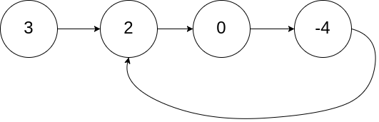
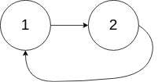

链表中，环的入口节点
题目
给定一个链表的头节点 head ，返回链表开始入环的第一个节点。 _如果链表无环，则返回 null。_
如果链表中有某个节点，可以通过连续跟踪 next 指针再次到达，则链表中存在环。 为了表示给定链表中的环，评测系统内部使用整数 pos 来表示链表尾连接到链表中的位置（索引从 0 开始）。如果 pos 是 -1，则在该链表中没有环。注意：pos 不作为参数进行传递，仅仅是为了标识链表的实际情况。
不允许修改 链表。
示例 1：

输入： head = [3,2,0,-4], pos = 1<br>输出： 返回索引为 1 的链表节点<br>解释： 链表中有一个环，其尾部连接到第二个节点。
示例 2：

输入：head = [1,2], pos = 0
输出：返回索引为 0 的链表节点
解释：链表中有一个环，其尾部连接到第一个节点。
示例 3：

输入： head = [1], pos = -1
输出： 返回 null
解释： 链表中没有环。
提示：
- 链表中节点的数目范围在范围
[0, 104]内 -105 <= Node.val <= 105pos的值为-1或者链表中的一个有效索引
进阶： 你是否可以使用 O(1) 空间解决此题？
/**
* Definition for singly-linked list.
* function ListNode(val) {
* this.val = val;
* this.next = null;
* }
*/
/**
* @param {ListNode} head
* @return {ListNode}
*/
var detectCycle = function(head) {
};参考答案
解题思路：
- 使用快慢指针，每次快指针走两步，慢指针走一步。
- 假设表头到入环点是距离为 D，D 到第一次快慢指针相遇的点为 S1 ，S1 到入环点距离为 S2
- 到第一次相遇点，慢指针走的距离为 D + S1；快指针走的距离为 D + S1 + S2 + S1
- 快指针走的距离是慢指针的两倍，所以 2 * (D + S1) = D + S1 + S2 + S1，得出：D = S2
- 所以，两个点分别从表头和第一次相遇点出发，每次走一步，相遇的地方就是入环点
示例代码
var detectCycle = function(head) {
// 找出第一次相遇的点
let fast = head, slow = head, fistMeet = null
while(slow && fast && fast.next) {
slow = slow.next
fast = fast.next.next
if(slow === fast) {
fistMeet = slow
break
}
}
if(!fistMeet) {
return null
}
while(fistMeet && head) {
if(fistMeet === head) {
return head
}
fistMeet = fistMeet.next
head = head.next
}
return null
}